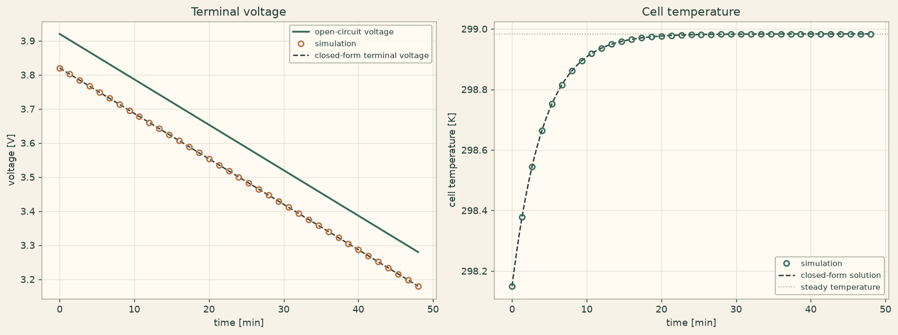

Docs › Examples › Constant-current discharge of a lumped battery
Energy devices · 0D
Constant-current discharge of a lumped battery
A lumped battery discharged at constant current, graded against the linear state-of-charge law and the thermal balance.

What it computes
OneSimulation integrates a lumped battery with an open-circuit-voltage curve, an ohmic resistance and a thermal balance in time.
What it checks
The state of charge SOC0 - I t/Q, the terminal voltage OCV - I R and the thermal rise with time constant C_th/h match to about 1e-9.
The notebook
The complete notebook, cell by cell. Run it to produce the figures and the comparison printout.
The cell is described by its state of charge \(s\) and its temperature \(T\). A constant current \(I\) drains the charge capacity \(Q\), the terminal voltage is the open-circuit voltage minus the ohmic drop, and the ohmic heat warms the cell against the cooling to the ambient:
Reference. With a linear open-circuit voltage and a constant resistance the solution is closed-form: the state of charge falls linearly, and the temperature approaches the steady rise \(I^2R/(hA)\) exponentially with the time constant \(C/(hA)\).
import numpy as np
from onesim.cad.geometry import LumpedDomain
from onesim.meshing import LumpedMesh
from onesim.numerics import Numerics
from onesim.numerics.discretization import LumpedParameters
from onesim.numerics.time import ClassicalRungeKutta4
from onesim.physics.chemistry import BatteryChemistry, LumpedBattery
from onesim.results.storage import MemoryOutputSink, Output
from onesim.simulation import Problem, Simulation
from onesim.simulation.initial_conditions import InitialValue
from onesim.visualization import theme, plots
theme.set()
capacity, current, resistance = 2.0 * 3600.0, 2.0, 0.05
thermal_capacity, cooling, ambient = 60.0, 0.24, 298.15
open_circuit = lambda soc: 3.2 + 0.8 * soc
end_time = 0.8 * capacity / currentModel
The cell is a lumped model without spatial extent. It is discharged from 90 % to 10 % state of charge with the classical Runge-Kutta method; the outputs are collected in memory.
cell = LumpedDomain()
chemistry = BatteryChemistry("linear-ocv-cell", open_circuit_voltage=lambda soc, temperature: open_circuit(soc),
internal_resistance=lambda soc, temperature: resistance)
model = LumpedBattery(domain=cell.system, chemistry=chemistry, charge_capacity=capacity, current=current,
thermal_capacity=thermal_capacity, heat_transfer=cooling, ambient_temperature=ambient)
problem = Problem(name="Constant-current discharge", geometry=cell, physics=(model,), initial_conditions=(
InitialValue(model.state_of_charge, 0.9), InitialValue(model.temperature, ambient)))
numerics = Numerics(spatial=LumpedParameters(), time_integrator=ClassicalRungeKutta4())
record = MemoryOutputSink()
Simulation(problem=problem, mesh=LumpedMesh(cell), numerics=numerics).run(
start_time=0.0, end_time=end_time, time_step=end_time / 288,
output=Output(fields=(model.state_of_charge, model.temperature, model.terminal_voltage), interval=end_time / 288, sink=record))Results
times = record.times
soc, temperature, voltage = (record.time_series(field)[1] for field in (model.state_of_charge, model.temperature, model.terminal_voltage))
exact_soc = 0.9 - current * times / capacity
exact_voltage = open_circuit(exact_soc) - current * resistance
exact_temperature = ambient + current**2 * resistance / cooling * (1 - np.exp(-times * cooling / thermal_capacity))
print(f"largest deviation of the state of charge {np.abs(soc - exact_soc).max():.1e}")
print(f"largest deviation of the terminal voltage {np.abs(voltage - exact_voltage).max():.1e} V")
print(f"largest deviation of the temperature {np.abs(temperature - exact_temperature).max():.1e} K "
f"(rise {temperature[-1] - ambient:.3f} K)")Figure
fig = plots.figure(1, 2, size=(13, 4.8))
plots.line(times / 60, {"open-circuit voltage": open_circuit(exact_soc)}, points={"simulation": (times[::8] / 60, voltage[::8])},
reference={"closed-form terminal voltage": exact_voltage}, xlabel="time [min]", ylabel="voltage [V]",
title="Terminal voltage", ax=fig[0])
plots.line(points={"simulation": (times[::8] / 60, temperature[::8])},
reference={"closed-form solution": (times / 60, exact_temperature)},
hlines={"steady temperature": ambient + current**2 * resistance / cooling}, xlabel="time [min]",
ylabel="cell temperature [K]", title="Cell temperature", legend="lower right", ax=fig[1])
plots.show()Going further
Give the cell a measured open-circuit curve and a resistance that rises at low temperature, or replace the constant current by a drive cycle.